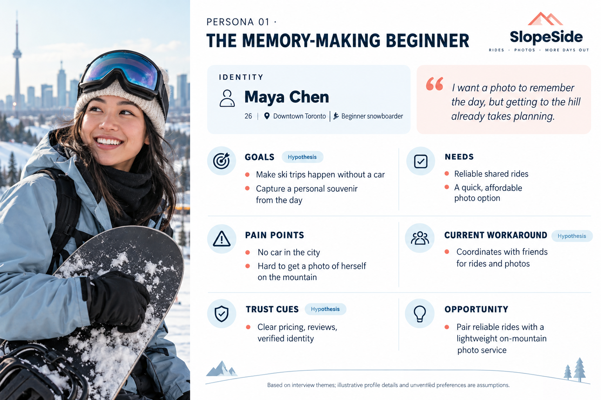
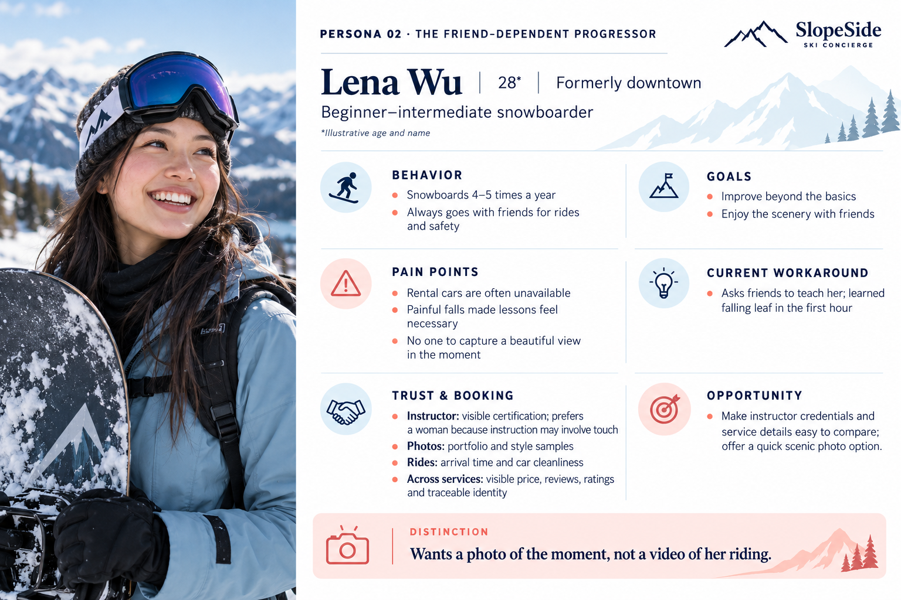
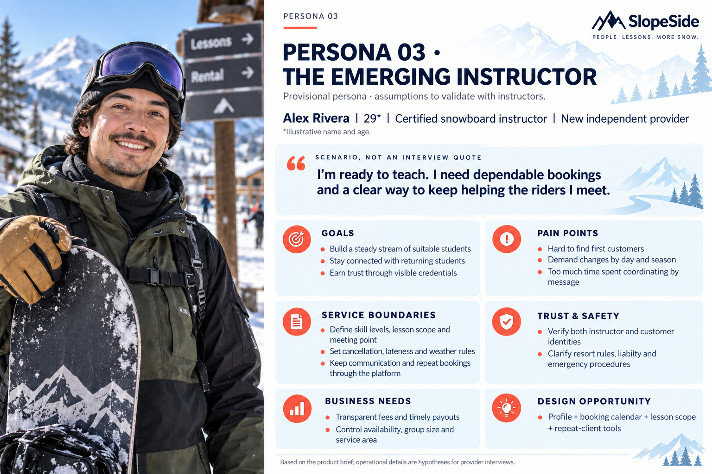

Ski Butler — A Concierge for People Who Just Want to Have Fun
This project imagines a concierge platform that pairs riders with locals who'll show them around, take their photos, and drive them there — no lesson required, no commitment, just someone who's done this a hundred times taking the hassle off your hands.
01 / Discover
The hassles around the riding
I love snowboarding. It's the rides, weather checks and keeping friends together that make each trip harder.
My camera roll is mostly scenery and quick snapshots. I still barely have a riding photo I love — finding someone to take one is another thing to organise.


Checking it against other riders
I interviewed two other riders to see if this was just me. It wasn't — both put carpooling near the top, since neither owns a car. But they diverged in a way that mattered: one has never skied and doesn't know where to start; the other rides often and just wants the day to run smoother.
The other side of the booking
If riders need guiding, filming, or teaching, someone has to be on the other end of that booking. I talked to a friend skilled enough that other riders already treat her like an instructor. Her problem is the opposite of a beginner's: no steady stream of students, demand that swings with the season, and hours lost coordinating by text instead of teaching.
02 / Define
Three starting points, one platform
The beginner can't get through the door — no gear, no one to ask, unsure how to even get there. For her, footage isn't vanity, it's proof she went.
The regular rider has the habit but not the trust — she wants certification, ratings, price, and a female provider before booking a stranger, and wants someone to catch moments she'd otherwise miss.
The instructor has the skill but not the infrastructure — she wants both sides verified, clear lesson boundaries, and dependable payouts.



One framework, three kinds of help
Scoped around three booking types — a "ski butler" companion role (guiding, photos/video, light pointers, not formal instruction), carpooling, and formal instruction — sharing one framework: provider profile, filter by resort + date, message to confirm, pay, a day-of "find each other" moment, mutual review after.
A companion, not a lesson
The ski butler role targets a different customer: no interest in a lesson's commitment, just a smooth guided day and good photos. Selection leans on experience and sample portfolio, not certification.
03 / Develop
Starting with instructor booking
Built the instructor flow first: providers list resorts, what they teach, and certification status (certified providers go through review before going live; uncertified but experienced providers go live immediately, filtered by reviews over time). Customers filter by riding style, skill level, and certified-only vs. everyone.
04 / Next steps · In progress
Connecting the rest of the day
Carpooling is next — matched by route and time rather than by picking a person, with gear space as a ski-specific detail generic carpool apps don't need.